LTE / LTE-ADVANCED
LTE and LTE-Advanced Study Guide
A visual guide for telecom engineers: architecture, air interface, procedures, VoLTE and LTE-Advanced.
Prefer to read offline?
The complete guide as one PDF: 89 pages, 6.6 MB. The earlier text-only notes are still available here.
1. EPS Architecture
The nodes of an LTE network and what each one does: eNodeB, MME, S-GW, P-GW, HSS and PCRF.
1.1The big picture
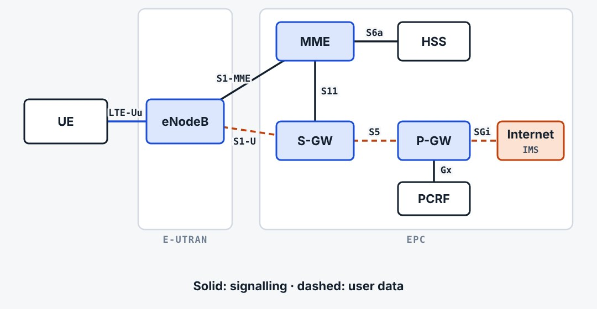
An LTE network has two parts. The radio network, E-UTRAN, is made of eNodeBs only. The core network, EPC, handles mobility, sessions and the connection to the internet. Together they form the Evolved Packet System, EPS. Everything is packet switched: there is no circuit-switched domain.
1.2E-UTRAN: only eNodeBs
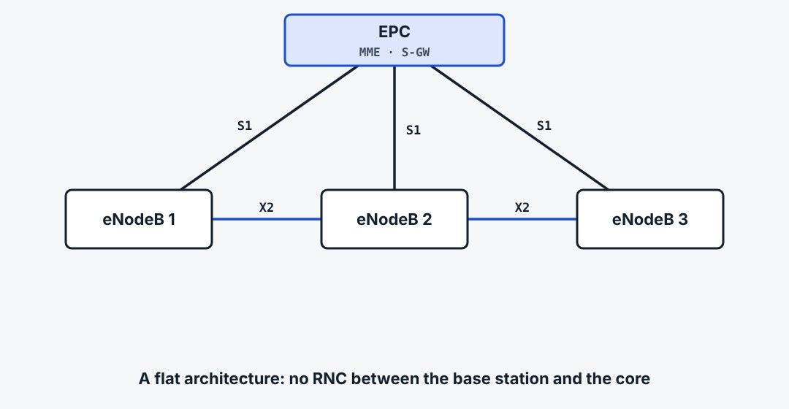
In 3G the radio network had two levels: the NodeB and the RNC above it. LTE removes the controller. Each eNodeB does the radio control itself and connects straight to the core over S1. Neighbouring eNodeBs talk to each other over X2, mainly for handover and interference coordination.
1.3What the eNodeB does
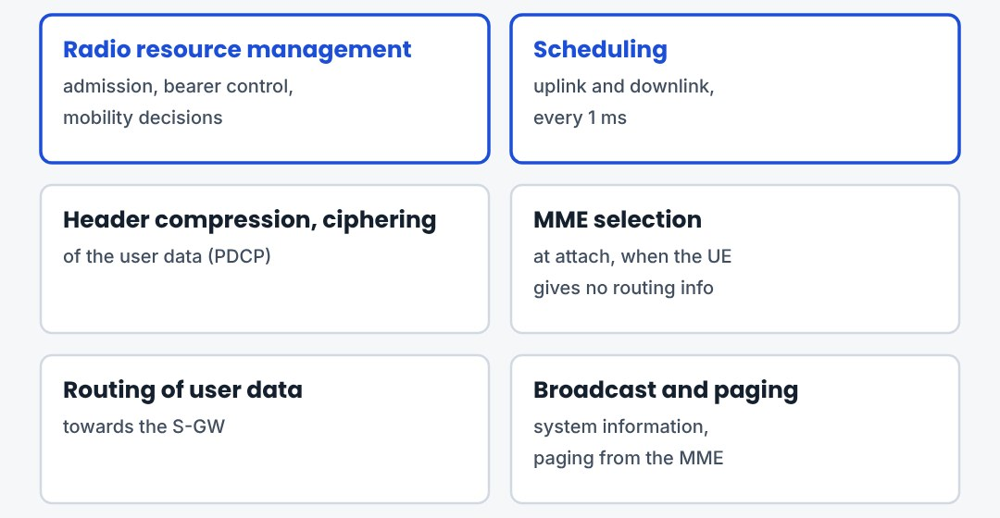
The eNodeB owns everything on the radio side. It schedules every UE each millisecond, decides handovers, compresses and ciphers the user data, and picks an MME when a UE attaches. It also broadcasts system information and sends paging messages on request of the MME.
1.4MME: the control node
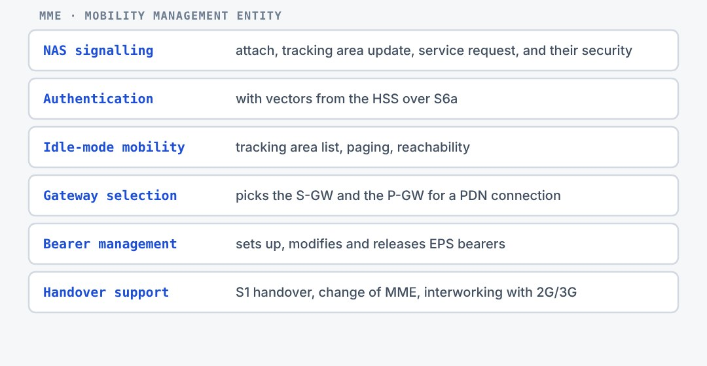
The MME is the signalling centre of the EPC. It never touches user data. It authenticates the UE with data from the HSS, runs NAS security, tracks idle UEs at tracking-area level and pages them. It also chooses the S-GW and P-GW and manages the bearers.
1.5S-GW and P-GW: the user plane
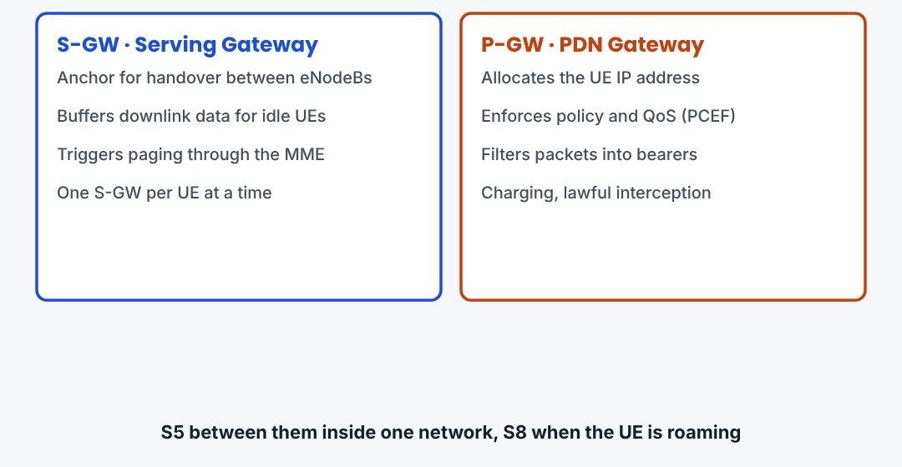
Two gateways carry the user data. The S-GW is the local anchor: when the UE changes eNodeB the data path is switched here, and it buffers downlink data for idle UEs. The P-GW is the edge to the outside. It gives the UE its IP address and enforces policy and charging.
1.6HSS and PCRF
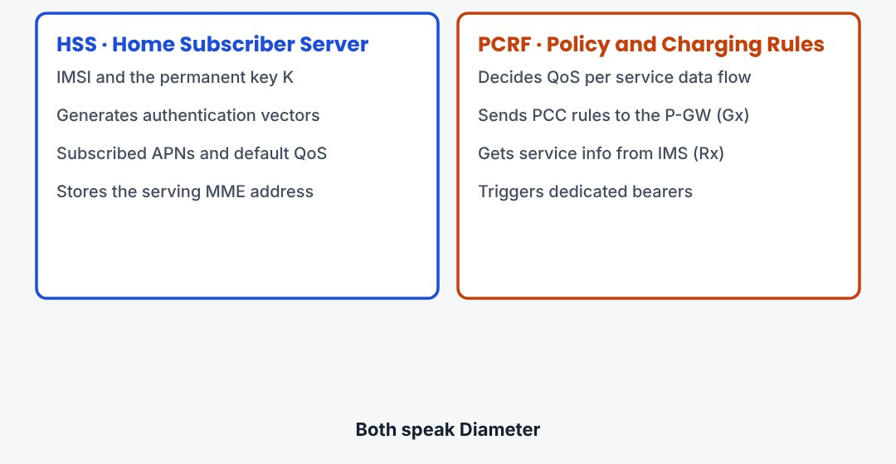
Two more nodes complete the picture. The HSS is the subscriber database: identities, security keys, subscribed APNs and QoS, and the MME that currently serves the UE. The PCRF decides the policy: which service gets which QoS and how it is charged.
1.7Identities you see in logs
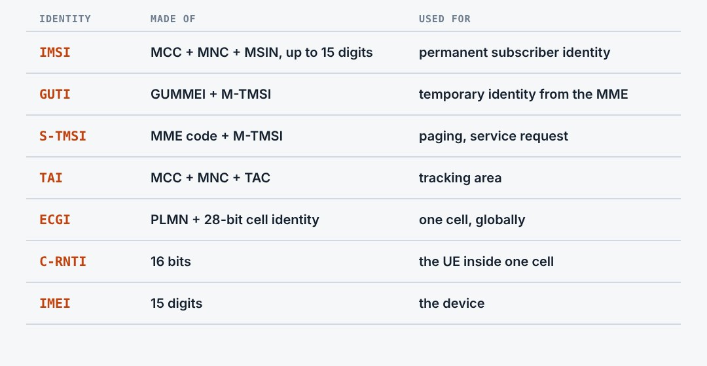
A handful of identities appear in every LTE trace. The IMSI is permanent and is sent as rarely as possible. The GUTI is the temporary identity given by the MME. Its short form, the S-TMSI, is used for paging. On the radio side the UE is known by its C-RNTI.
1.8Three things to remember
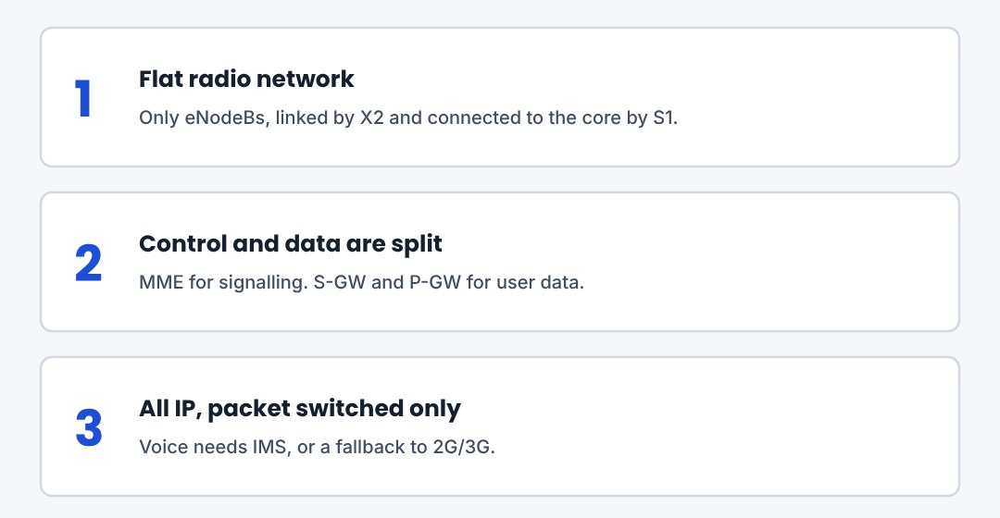
E-UTRAN is flat: the eNodeB does all radio control. The MME handles signalling only, the gateways handle data only. HSS and PCRF supply the subscription and the policy.
2. Interfaces and Protocol Stacks
Which protocol runs on which interface, the control and user plane stacks, and the channels of the radio interface.
2.1The interface map
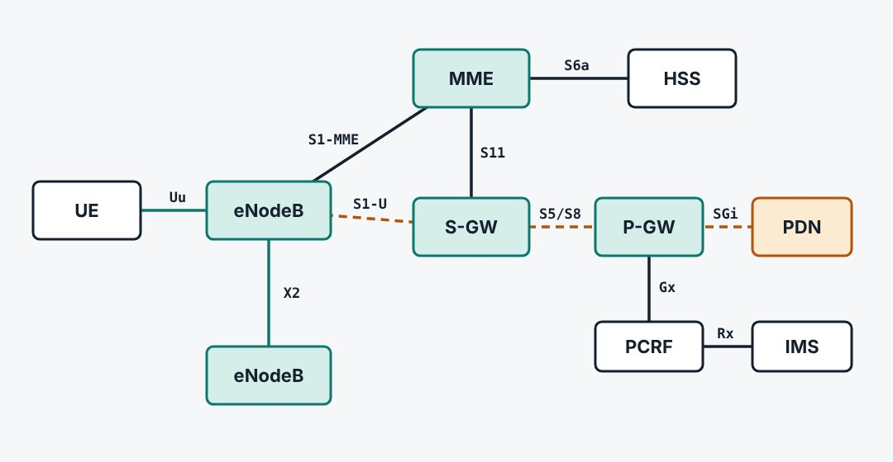
Every link between two LTE nodes has a name. Uu is the radio. S1 connects the eNodeB to the core, split into S1-MME for signalling and S1-U for data. X2 connects eNodeBs. S11, S5 and S6a are inside the core, and SGi leads to the packet data network.
2.2Interfaces and their protocols
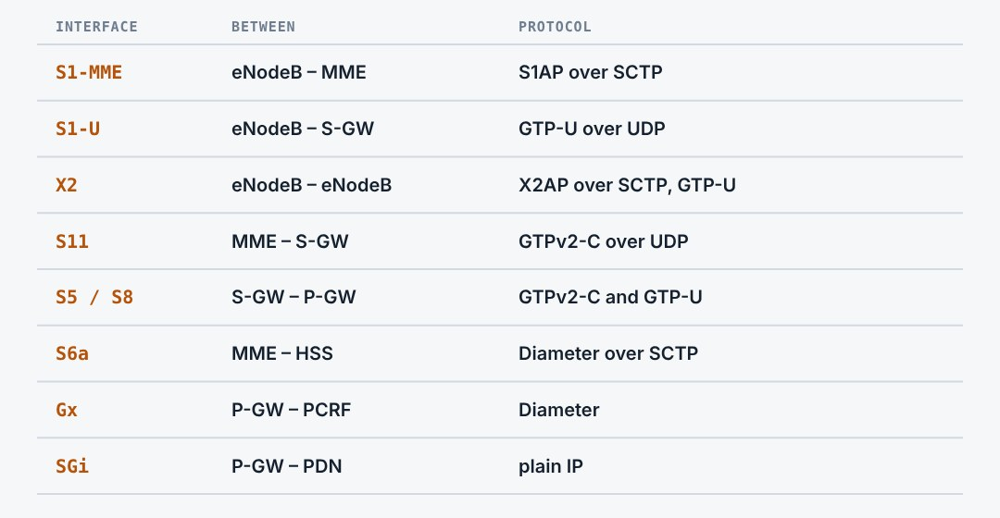
Signalling interfaces towards the eNodeB use application protocols over SCTP: S1AP and X2AP. Inside the core, GTP-C carries the session signalling and Diameter talks to the databases. User data always travels in GTP-U tunnels over UDP.
2.3Control plane stack
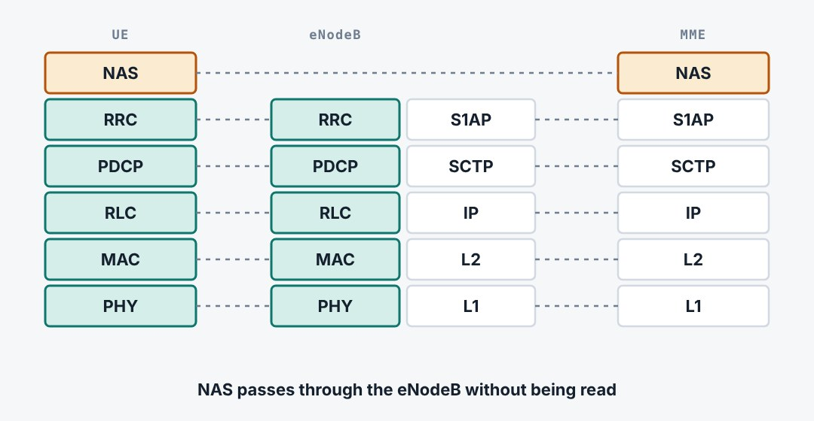
NAS messages go from the UE to the MME. The eNodeB does not read them: it carries them inside RRC on the radio side and inside S1AP on the core side. RRC itself ends in the eNodeB. Below RRC the radio uses PDCP, RLC, MAC and the physical layer.
2.4User plane stack
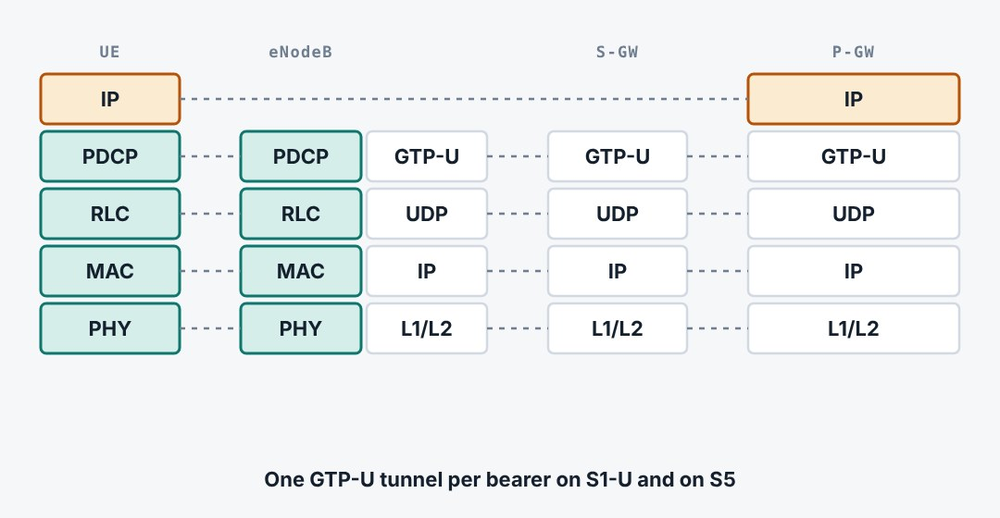
The IP packet of the user travels from the UE to the P-GW. On the radio it is carried by PDCP, RLC and MAC. From the eNodeB onwards it sits inside a GTP-U tunnel, first to the S-GW and then to the P-GW. The P-GW removes the tunnel and sends the packet to the internet.
2.5Layer 2 in three sublayers
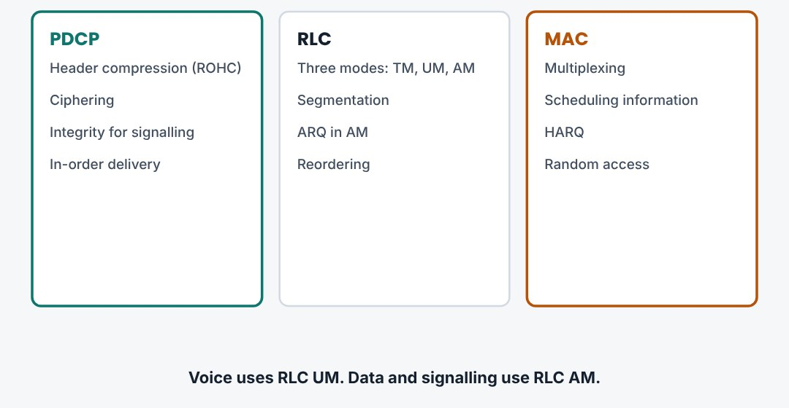
PDCP compresses IP headers and ciphers. RLC cuts the data to the size the scheduler grants and, in acknowledged mode, repeats what was lost. MAC multiplexes the logical channels, runs HARQ and handles random access.
2.6Logical, transport and physical channels
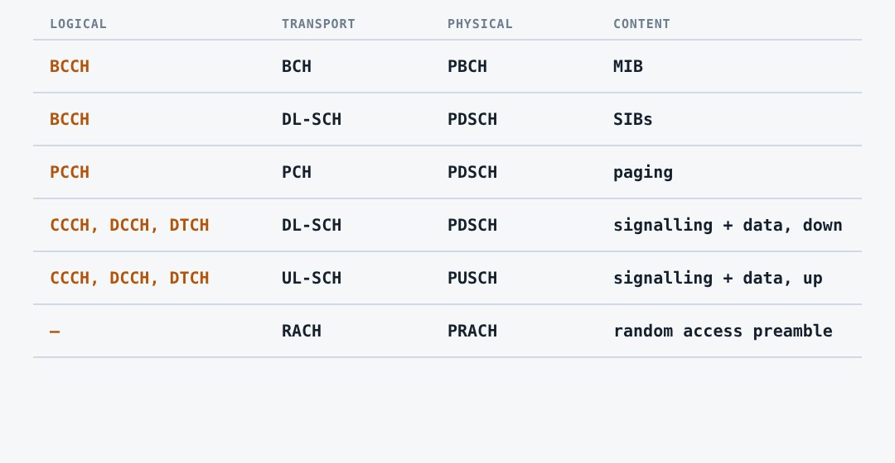
RLC offers logical channels that say what is sent. MAC maps them to transport channels that say how it is sent. The physical layer maps those to physical channels. Almost everything ends up on the shared channels PDSCH and PUSCH.
2.7Radio bearers
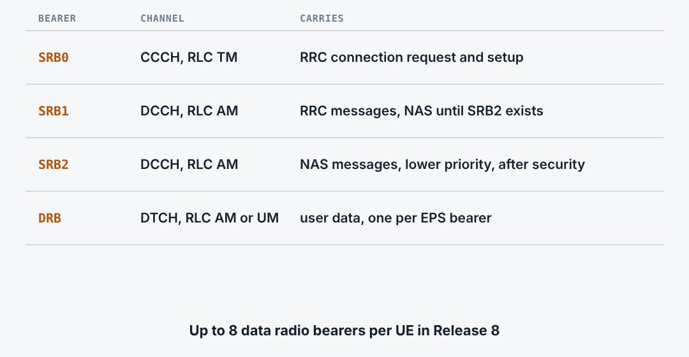
A radio bearer is a PDCP and RLC entity pair between UE and eNodeB. Signalling radio bearers carry RRC and NAS. Data radio bearers carry user data, one per EPS bearer. SRB0 needs no setup. SRB1 comes with the RRC connection and SRB2 after security is active.
2.8Three things to remember
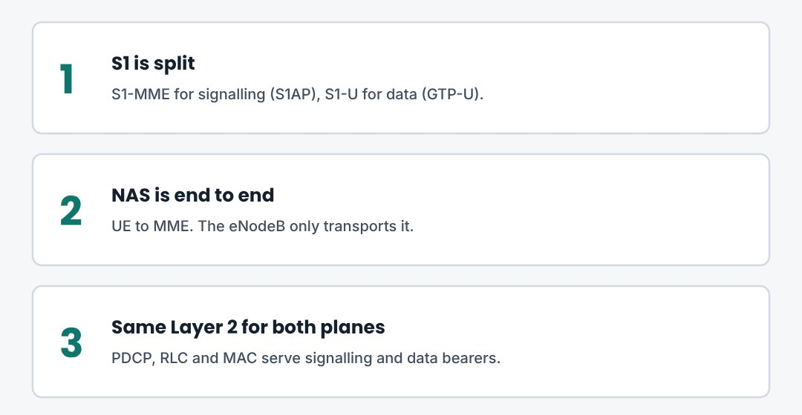
S1AP and X2AP run over SCTP, user data runs in GTP-U. NAS goes end to end between UE and MME. The radio stack is PDCP, RLC, MAC, PHY in both planes.
3. The LTE Air Interface
OFDMA in the downlink, SC-FDMA in the uplink, the cyclic prefix, modulation and the six channel bandwidths.
3.1Downlink: OFDMA
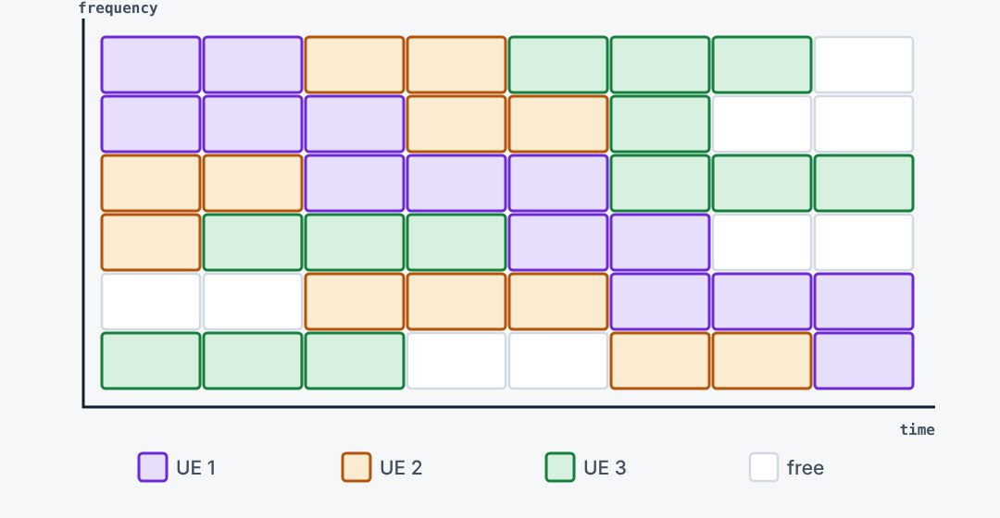
The LTE downlink splits the carrier into subcarriers 15 kHz apart. Different users get different groups of subcarriers, and the allocation changes every millisecond. This is OFDMA: OFDM used as a multiple access scheme.
3.2Why the subcarriers do not disturb each other
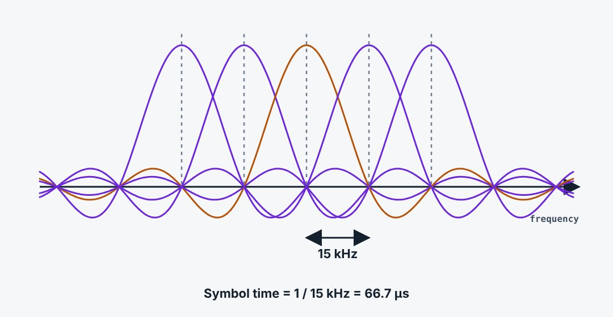
Each subcarrier has a sinc-shaped spectrum. With a spacing of exactly one over the symbol time, every subcarrier peaks where all the others are zero. The subcarriers overlap, which saves spectrum, yet the receiver can separate them with an FFT.
3.3Uplink: SC-FDMA
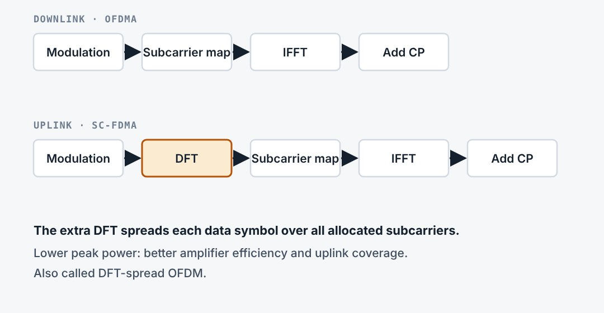
A plain OFDM signal has high peaks, which a handset amplifier handles badly. The uplink therefore adds a DFT before the subcarrier mapping. The result behaves like a single carrier signal with lower peak to average power. The cost: in Release 8 the allocated resource blocks must be contiguous.
3.4The cyclic prefix
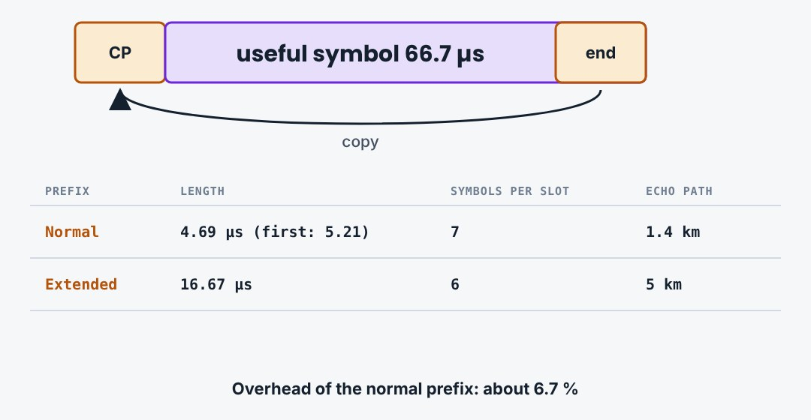
Each symbol starts with a copy of its own end. Echoes from the previous symbol fall into this prefix, which the receiver discards. The normal prefix lasts 4.7 microseconds and fits seven symbols into a slot. The extended prefix is for very large cells and broadcast.
3.5Modulation
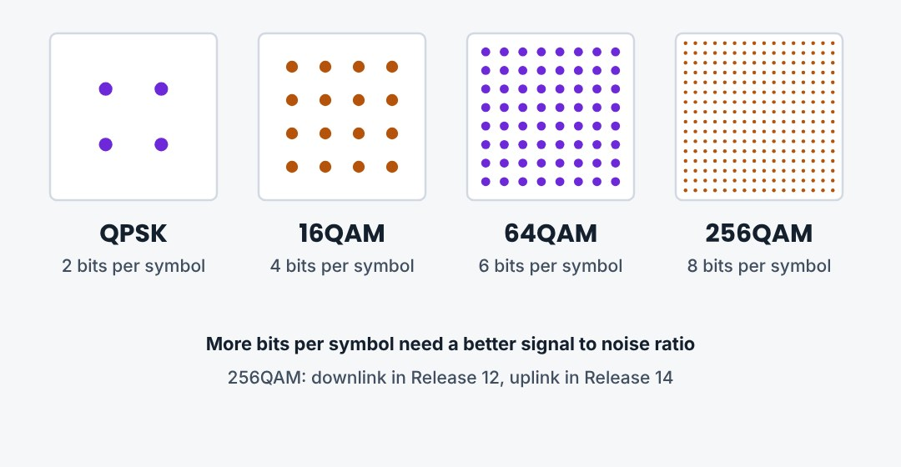
Each resource element carries one modulation symbol. QPSK carries 2 bits and survives poor signal. 16QAM carries 4 bits, 64QAM carries 6. Release 12 added 256QAM in the downlink with 8 bits. The eNodeB picks the modulation from the reported channel quality.
3.6Six channel bandwidths
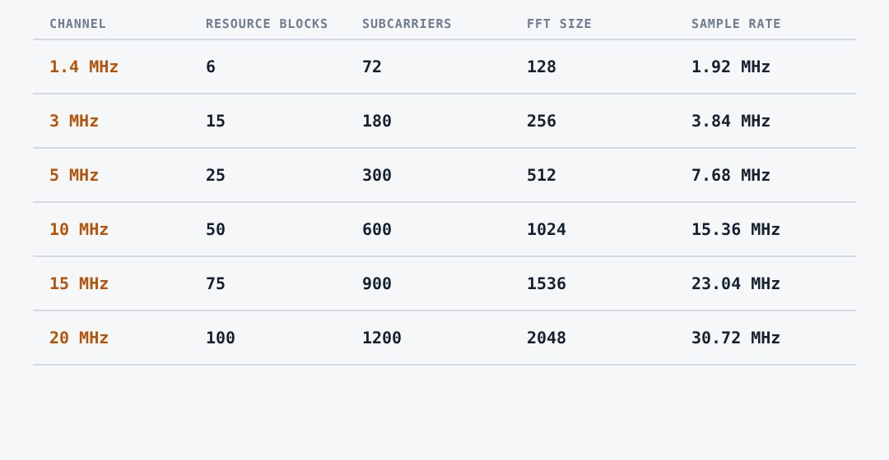
LTE defines six channel bandwidths. The subcarrier spacing is always 15 kHz, so only the number of resource blocks changes. A 20 MHz carrier has 100 resource blocks, which is 1200 subcarriers and 18 MHz of occupied spectrum.
3.7Where 150 Mbit/s comes from
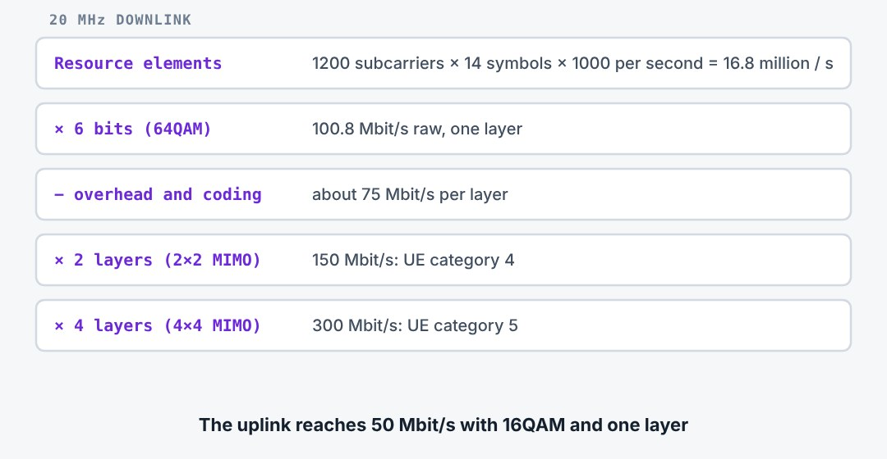
The peak rate follows from the grid. A 20 MHz carrier has 1200 subcarriers and 14 symbols per millisecond. With 64QAM that is about 100 Mbit/s raw for one layer. Control channels, reference signals and coding take roughly a quarter. Two MIMO layers then give 150 Mbit/s.
3.8Three things to remember
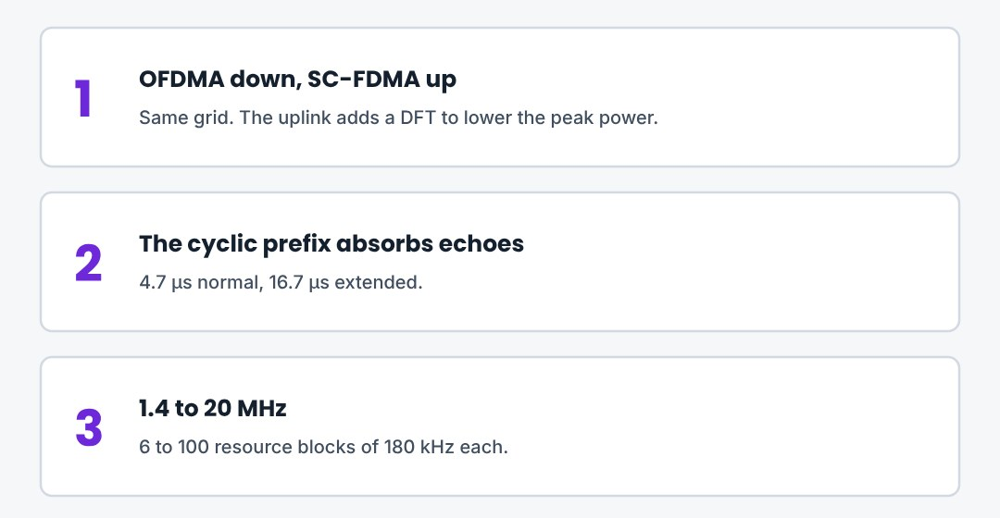
15 kHz subcarriers in both directions. OFDMA down, SC-FDMA up, because of the handset amplifier. From 6 to 100 resource blocks.
4. Frame Structure and Resource Grid
How LTE divides time and frequency: frames, subframes, slots, resource blocks, and the layout of a downlink subframe.
4.1Frame structure type 1: FDD
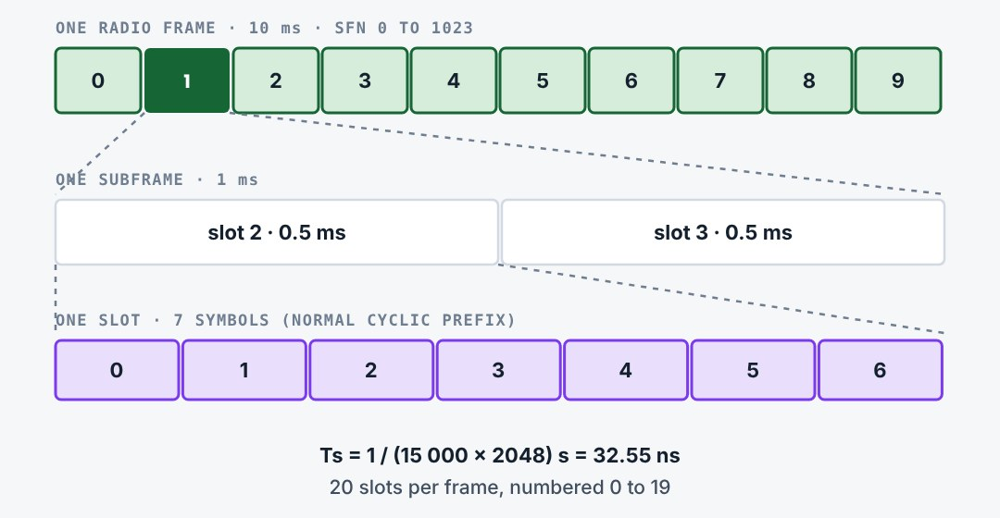
A radio frame lasts 10 ms and holds ten subframes of 1 ms. Each subframe has two slots of 0.5 ms. In FDD all ten subframes are available for downlink on one carrier and for uplink on the paired carrier. The basic time unit Ts is 1 / 30.72 MHz.
4.2Frame structure type 2: TDD
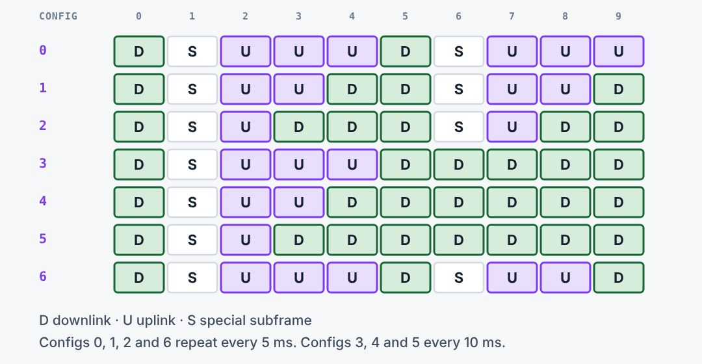
In TDD one carrier serves both directions. The frame keeps its ten subframes, but each one is downlink, uplink or special. Seven configurations exist, from uplink-heavy to downlink-heavy. Subframes 0 and 5 are always downlink, and subframe 2 is always uplink.
4.3The special subframe
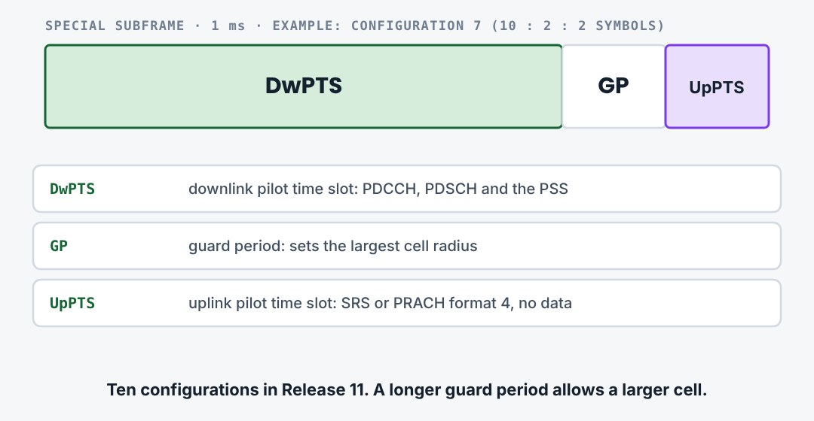
The special subframe is where TDD turns from downlink to uplink. It has three parts. DwPTS is a shortened downlink subframe. The guard period is silent, so that the downlink of far cells has died out and the UE can advance its uplink. UpPTS is a short uplink part for sounding or a short random access preamble.
4.4The resource block
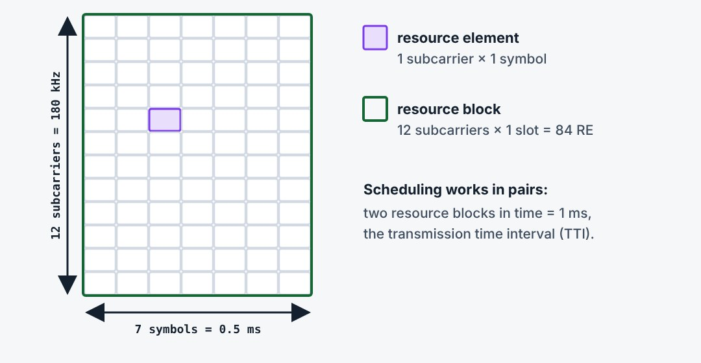
A resource block is 12 subcarriers wide and one slot long. With the normal cyclic prefix that is 12 × 7 = 84 resource elements, covering 180 kHz and 0.5 ms. A resource element is one subcarrier during one symbol and carries one modulation symbol.
4.5Units built from resource elements
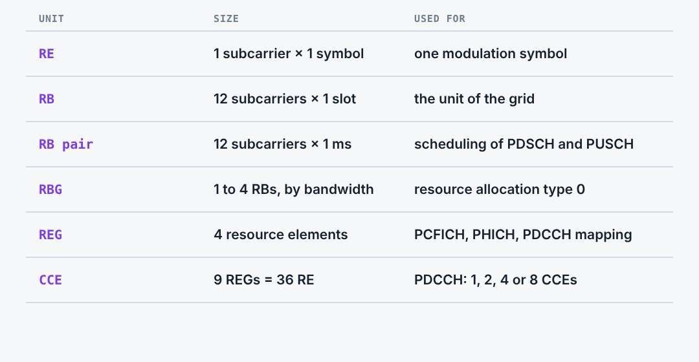
Several units are built on the resource element. Data is scheduled in resource block pairs. Control channels use smaller units: four resource elements form a resource element group, and nine groups form a control channel element, the building block of the PDCCH.
4.6Layout of a downlink subframe
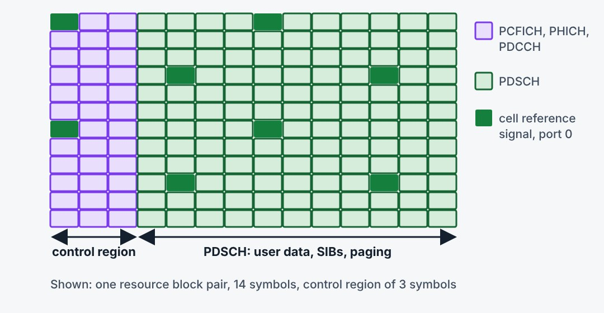
Every downlink subframe starts with a control region of one to three symbols. It holds the PCFICH, which tells how long the region is, the PHICH with the uplink HARQ feedback, and the PDCCH with the scheduling. The rest of the subframe carries the PDSCH. Reference signals are spread over the whole grid.
4.7Uplink subframe layout
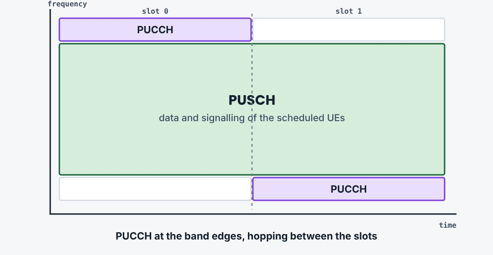
The uplink keeps the single-carrier property by placing the control channel at the two edges of the band. The PUCCH hops from one edge to the other between the two slots. The middle is the PUSCH. One symbol per slot carries the demodulation reference signal.
4.8Three things to remember
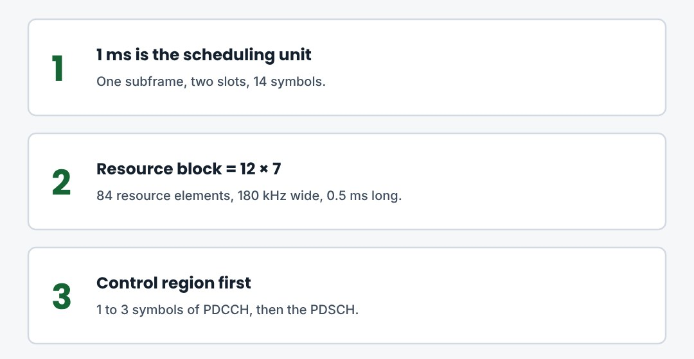
10 ms frame, 1 ms subframe, 0.5 ms slot. A resource block is 180 kHz by one slot. Control first, then data.
5. Physical Channels and Signals
From cell search to random access: synchronisation signals, broadcast, control, data and reference signals.
5.1Downlink channels at a glance
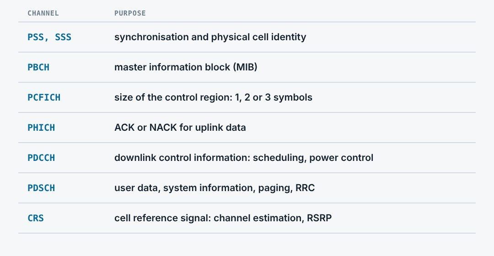
The downlink has three synchronisation and broadcast signals that a UE can read without any prior knowledge, three control channels at the start of every subframe, and one shared data channel. Reference signals run through all of them.
5.2Cell search: PSS and SSS
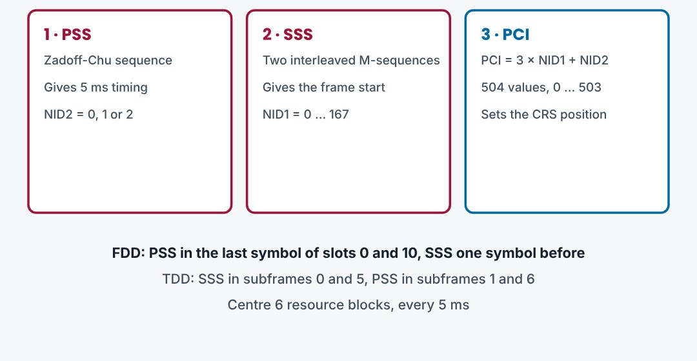
The UE first finds the primary synchronisation signal. It gives the 5 ms timing and one of three identities. The secondary signal then gives the frame start and one of 168 group identities. Together they form the physical cell identity. Both sit in the central 62 subcarriers, so no bandwidth knowledge is needed.
5.3PBCH and the MIB
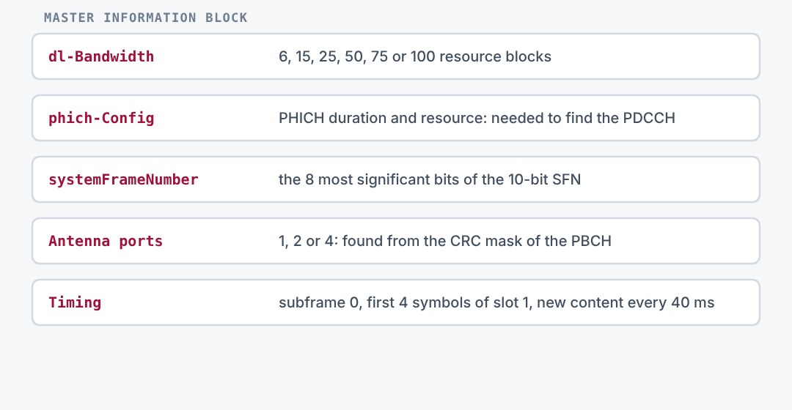
After synchronisation the UE reads the PBCH. It carries the master information block: the downlink bandwidth, the PHICH configuration and the system frame number. The MIB is repeated every 10 ms and renewed every 40 ms. It also sits in the centre 6 resource blocks.
5.4System information blocks
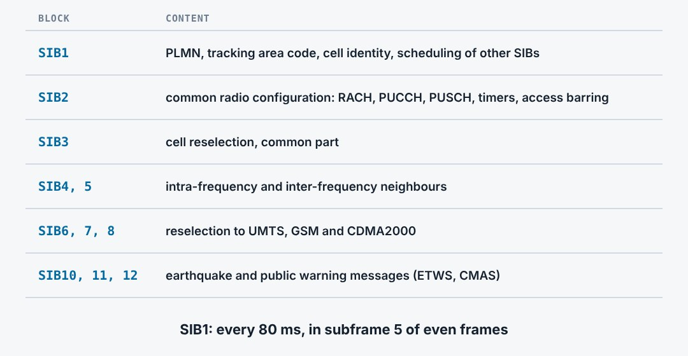
Everything else is in the system information blocks on the PDSCH. SIB1 has a fixed schedule and tells where the others are. SIB1 and SIB2 are the minimum a UE needs before it can access the cell.
5.5PDCCH and DCI
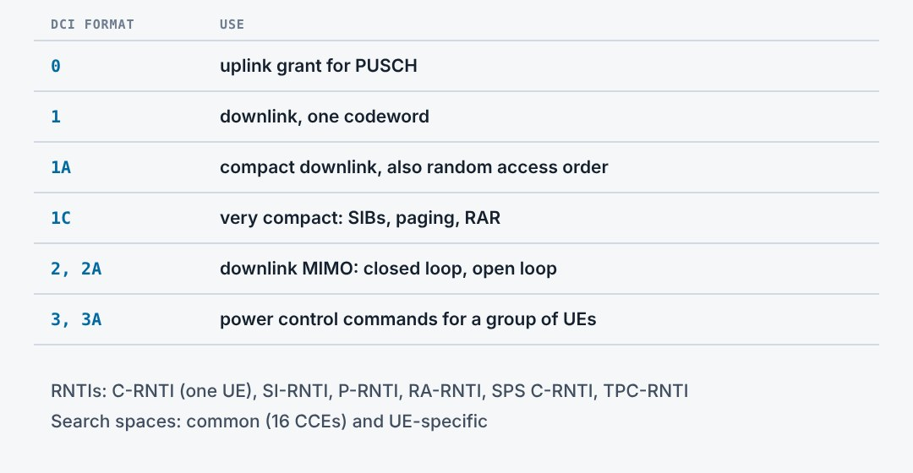
The PDCCH carries downlink control information. A DCI tells one UE where its data is and how it is coded. The CRC is scrambled with an RNTI, so the UE finds its own DCI by blind decoding a limited search space. A PDCCH uses 1, 2, 4 or 8 control channel elements depending on the radio conditions.
5.6Reference signals
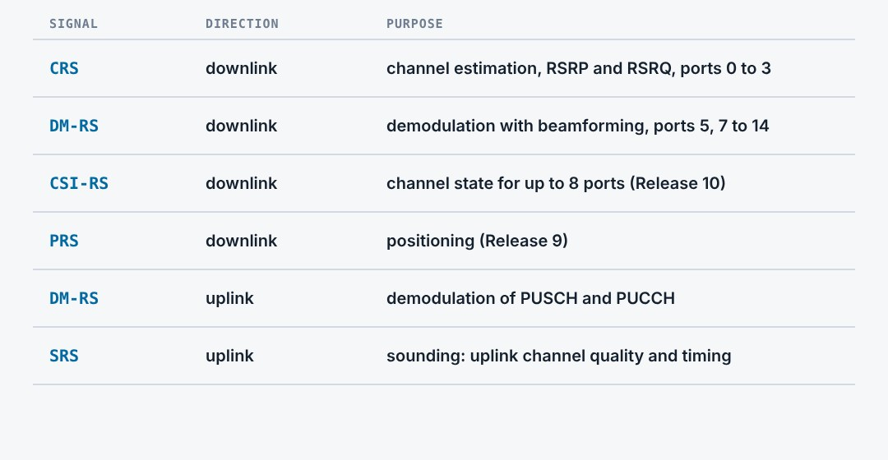
Reference signals are known symbols that let the receiver estimate the channel. The cell reference signal is always on and is what RSRP measures. UE-specific signals follow the precoding of one UE. Release 10 added CSI-RS so that up to eight antenna ports can be measured with little overhead.
5.7Uplink channels
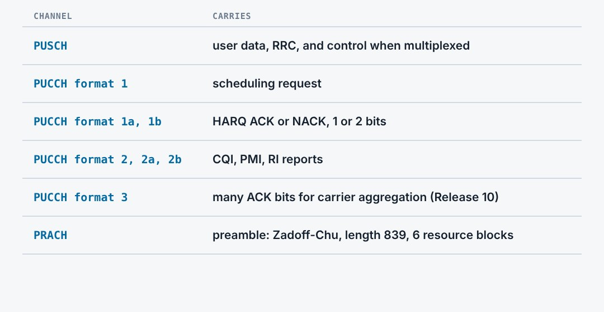
The uplink has three channels. The PUSCH carries data and, when scheduled, the control information too. The PUCCH carries control when there is no PUSCH: scheduling requests, HARQ feedback and channel quality reports. The PRACH carries the random access preamble.
5.8Random access
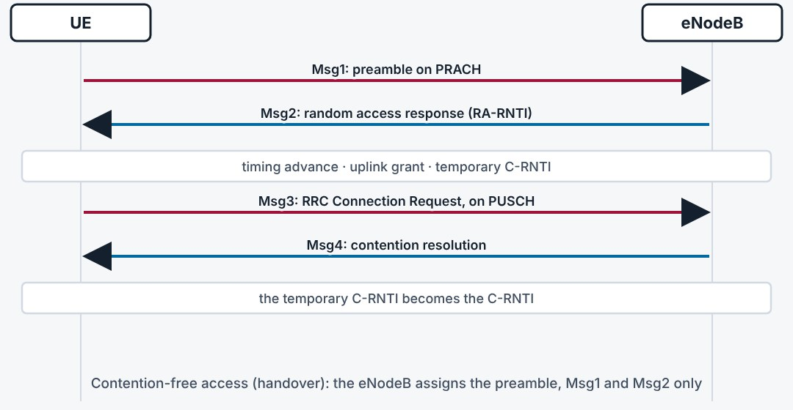
Random access gives the UE uplink timing and a first grant. The UE sends one of 64 preambles. The eNodeB answers with a timing advance, a temporary identity and a grant. The UE sends its identity in Msg3, and Msg4 resolves the case where two UEs chose the same preamble.
5.9Three things to remember
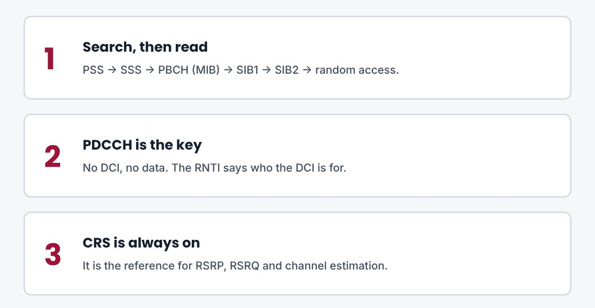
PSS and SSS give timing and cell identity. MIB, then SIB1, then SIB2. The PDCCH tells each UE where its data is.
6. MIMO and Transmission Modes
What several antennas are used for, how the UE reports the channel, and the ten transmission modes.
6.1Three uses of multiple antennas
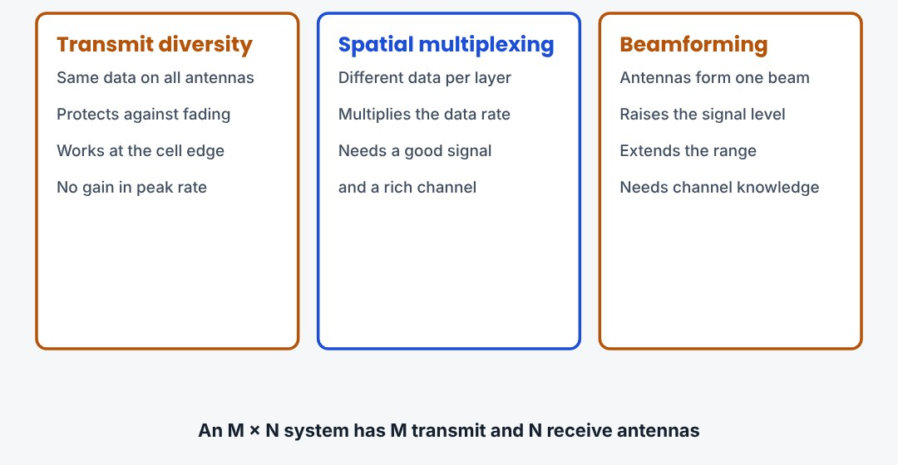
Several antennas can be used in three ways. Diversity sends the same data over different paths, for robustness. Spatial multiplexing sends different data streams at once, for speed. Beamforming points the energy at one UE, for range. Which one the eNodeB uses depends on the signal quality and the channel.
6.2Transmit diversity
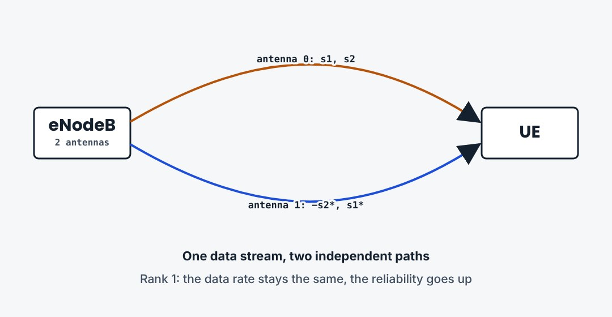
With two antennas LTE uses space-frequency block coding. Each pair of symbols is sent on two neighbouring subcarriers from both antennas, the second time swapped and conjugated. If one path fades, the other still delivers. The control channels and the PBCH always use this scheme when the cell has more than one antenna port.
6.3Spatial multiplexing
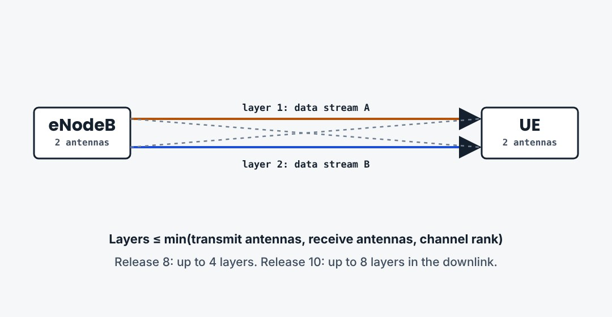
With good signal and enough scattering, the antennas can carry separate data streams, called layers, on the same resource blocks. A 2×2 system carries two layers and doubles the peak rate. The number of layers can never exceed the smaller antenna count, nor the rank of the channel.
6.4What the UE reports: CQI, PMI, RI
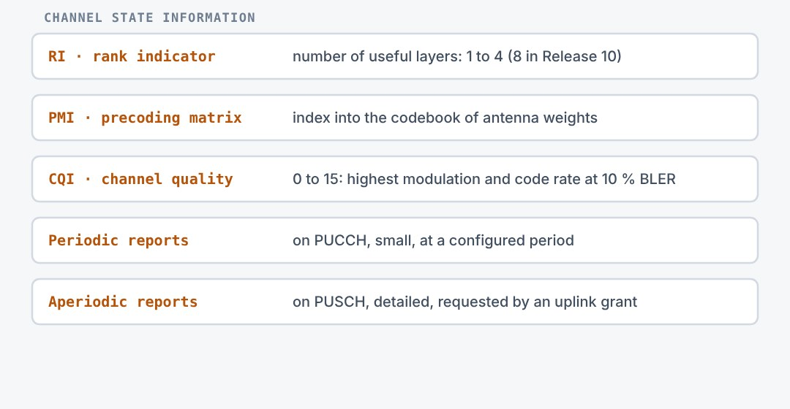
The eNodeB cannot see the downlink channel, so the UE reports it. The rank indicator says how many layers the channel supports. The precoding matrix indicator proposes the antenna weights. The channel quality indicator says which modulation and code rate would give about 10 percent block errors.
6.5The ten transmission modes
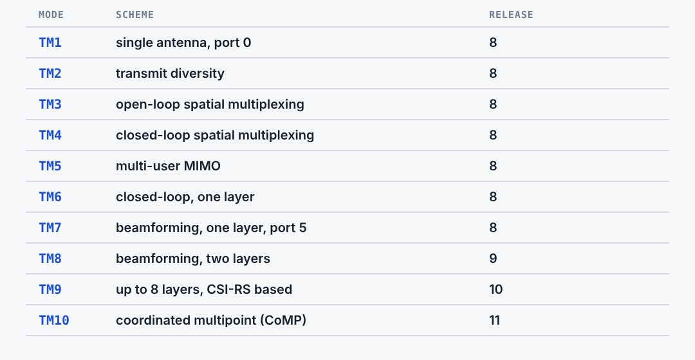
RRC configures one transmission mode per UE. It fixes which MIMO scheme the PDSCH uses and which DCI formats the UE must look for. Modes 1 to 7 are Release 8. The later modes rely on UE-specific reference signals and allow more layers.
6.6Codewords, layers, antenna ports
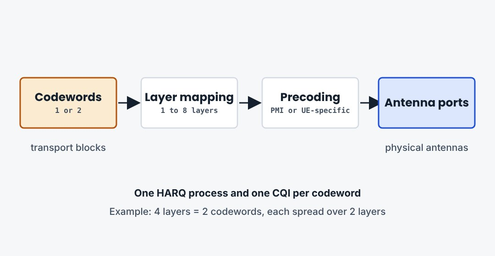
The path from data to antennas has three steps. Up to two codewords, each with its own HARQ process and modulation, are mapped onto the layers. Precoding then maps the layers onto the antenna ports. So even eight layers use only two codewords and two ACK bits.
6.7UE categories
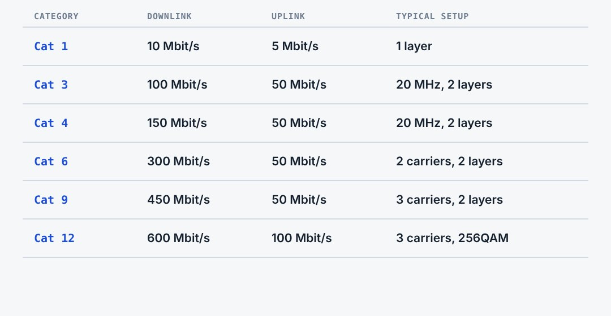
The UE category sums up what a device can do: peak rate, layers and modulation. Categories 1 to 5 belong to Release 8. Higher categories need carrier aggregation. From Release 12 the downlink and uplink categories are signalled separately.
6.8Three things to remember
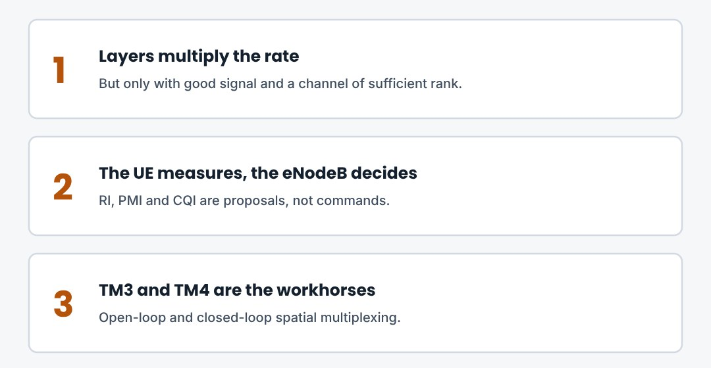
Diversity for robustness, multiplexing for speed, beamforming for range. The UE reports RI, PMI and CQI. The transmission mode sets the scheme.
7. Scheduling, Link Adaptation and HARQ
How the eNodeB shares the radio every millisecond, picks the modulation, and repairs errors.
7.1The scheduler
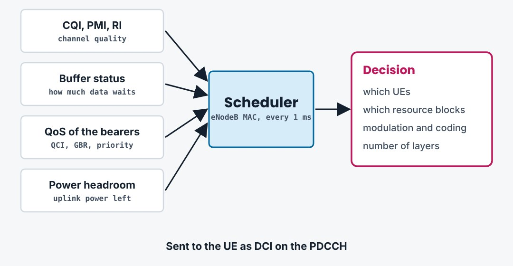
The scheduler sits in the MAC layer of the eNodeB and runs every millisecond. It decides which UEs transmit, on which resource blocks, with which modulation and coding. It works for both directions. The algorithm itself is not standardised, only the signalling around it.
7.2Downlink scheduling
In the downlink the grant and the data come in the same subframe. The UE finds a DCI with its C-RNTI on the PDCCH, reads the PDSCH resource blocks it points to, and answers four subframes later with an ACK or NACK.
7.3Uplink scheduling
In the uplink the UE must first ask. It sends a scheduling request on the PUCCH. The eNodeB gives a small grant, and the UE uses it to report how much data it has. Larger grants follow. Each grant is valid four subframes after it was received.
7.4Link adaptation
The eNodeB matches the modulation and code rate to the channel. The CQI from the UE is the input. The result is an MCS index from 0 to 28, which together with the number of resource blocks gives the transport block size. The target is about 10 percent errors on the first transmission.
7.5HARQ
HARQ repairs errors within milliseconds. The receiver keeps a failed block and combines it with the retransmission, which carries different redundancy bits. FDD uses eight parallel stop-and-wait processes, so the data flow never stops. A retransmission comes eight subframes after the first attempt.
7.6HARQ and ARQ work together
Two layers repair errors. HARQ in MAC is fast but gives up after a few attempts, and its ACK can be misread. RLC acknowledged mode sits above and catches what is left with status reports and retransmissions. Voice skips the RLC part, because a late packet is useless.
7.7Semi-persistent scheduling
A voice call sends a small packet every 20 ms. Granting each one over the PDCCH would use up the control channel. With semi-persistent scheduling RRC sets the period, and one PDCCH with the SPS C-RNTI activates a grant that then repeats by itself until it is released.
7.8DRX in connected mode
A connected UE does not need to watch the PDCCH all the time. With DRX it wakes for a short on-duration in each cycle. If it is scheduled, an inactivity timer keeps it awake. If not, it sleeps until the next cycle. This saves battery at the price of some delay.
7.9Three things to remember
The eNodeB schedules both directions every millisecond. CQI drives the MCS. HARQ answers after four subframes.
8. EPS Bearers and QoS
How LTE gives different traffic different treatment: bearers, QCI, traffic flow templates and dedicated bearer setup.
8.1The EPS bearer
An EPS bearer is a pipe with one QoS from the UE to the P-GW. It is made of three pieces joined one to one: a radio bearer, an S1 bearer and an S5 bearer. The last two are GTP-U tunnels. All packets in one bearer get the same treatment.
8.2Default and dedicated bearers
Each PDN connection starts with one default bearer. It comes with the IP address, is always non-GBR and stays as long as the connection. Dedicated bearers are added on top when a service needs different QoS. They share the same IP address and are selected by packet filters.
8.3QoS parameters
Every bearer has a QCI and an ARP. The QCI points to a standard set of characteristics. The ARP decides who is admitted or dropped under congestion. GBR bearers add a guaranteed and a maximum bit rate. Non-GBR bearers share two aggregate limits.
8.4The standardised QCI values
Nine QCI values come from Release 8. Each one fixes the resource type, a priority, a packet delay budget and a packet error loss rate. The eNodeB turns these into scheduler weights and RLC and PDCP settings.
8.5Traffic flow templates
A traffic flow template is a set of packet filters. It decides which IP packets go into which bearer. The UE applies the uplink template, the P-GW the downlink one. Packets that match no filter go into the default bearer.
8.6A VoLTE phone has three bearers
A typical VoLTE phone shows the model well. It has two PDN connections: one to the internet APN and one to the IMS APN. Each has a default bearer. During a call the network adds a dedicated bearer for the voice packets.
8.7Dedicated bearer activation
The network starts a dedicated bearer. The PCRF sends a rule to the P-GW, which asks for a new bearer. The MME packs a NAS request into the E-RAB setup, and the eNodeB delivers it in an RRC reconfiguration that adds the data radio bearer.
8.8Three things to remember
A bearer is a QoS pipe from UE to P-GW. The default bearer comes with the IP address. Dedicated bearers are added by the network when a service needs them.
9. Attach, Authentication and Security
What happens between switching the phone on and having an IP address: the attach procedure, EPS-AKA and the two security layers.
9.1What attach achieves
Attach registers the UE in the network. In LTE it always sets up a default bearer too, so the UE is online as soon as attach is done. At the end the UE has a temporary identity, a tracking area list, security keys and an IP address.
9.2Step 1: RRC connection
The UE first needs a signalling connection to the eNodeB. After random access it sends the RRC Connection Request and receives the setup of SRB1. Its first NAS message, the Attach Request with a PDN Connectivity Request inside, rides in the RRC Connection Setup Complete.
9.3Step 2: authentication and NAS security
The MME fetches authentication vectors from the HSS and challenges the UE. When the answer matches, it starts NAS security, so all later NAS messages are integrity protected and ciphered. Then it registers itself in the HSS and receives the subscription data.
9.4EPS-AKA: mutual authentication
Authentication works both ways. The USIM checks AUTN to verify that the network is genuine. The MME compares RES with the expected value to verify the UE. Both sides derive the same key KASME without ever sending it over the radio. The permanent key K never leaves the USIM and the HSS.
9.5The key hierarchy
All keys grow from the permanent key K. KASME is the root for one MME session. From it come the two NAS keys and KeNB, which the MME hands to the eNodeB. The eNodeB derives the RRC and user plane keys. A stolen eNodeB key therefore reveals nothing about NAS.
9.6Two security layers
LTE protects signalling twice. NAS security runs between UE and MME. AS security runs between UE and eNodeB, in PDCP, and covers RRC and the user data. Integrity protection is mandatory for signalling. User data is ciphered but not integrity protected.
9.7Step 3: default bearer and attach accept
The MME creates the session through the S-GW at the P-GW, which allocates the IP address. It then sends the Attach Accept inside the Initial Context Setup Request. The eNodeB activates AS security and adds the data radio bearer. The UE confirms, and the downlink path is switched on.
9.8Three things to remember
Attach is registration plus default bearer. Authentication is mutual and leaves both sides with KASME. NAS and AS are protected separately.
10. Idle Mode: Tracking, Paging, Service Request
What the UE and the network do when no data flows: states, cell reselection, tracking area update, paging and the way back to connected.
10.1Three pairs of states
Three state machines describe a UE. EMM says whether it is registered. ECM says whether a signalling connection to the MME exists. RRC says whether a radio connection exists. In idle, the network knows the UE only by its tracking area list. In connected, it knows the cell.
10.2Cell selection and reselection
In idle the UE chooses its cell by itself. A cell is suitable when its level and quality are above the minimum broadcast in SIB1. The UE then keeps comparing: higher-priority frequencies first, and within one priority the best ranked cell after a hysteresis and a waiting time.
10.3Tracking areas and the TAI list
Cells are grouped into tracking areas. At attach the MME gives the UE a list of tracking areas. Inside the list the UE moves without any signalling. Only when it enters a cell whose tracking area is not in the list does it tell the network.
10.4Tracking area update
The UE sends a tracking area update when it leaves its list, when the periodic timer T3412 expires, or after some changes such as a return from 2G or 3G. The MME answers with a new list and often a new GUTI. If the MME has changed, the new one fetches the context from the old one.
10.5Paging
When downlink data arrives for an idle UE, the S-GW buffers it and notifies the MME. The MME sends a paging message to every eNodeB in the tracking area list. Each cell broadcasts the S-TMSI at the paging occasion of the UE. The UE answers with a service request.
10.6When the UE listens for paging
An idle UE sleeps almost all the time. It wakes once per DRX cycle, in one subframe of one frame, and checks the PDCCH for the P-RNTI. The frame and subframe follow from the IMSI, so the eNodeB knows when each UE is listening.
10.7Service request
The service request brings an idle UE back to connected. It is short, because the MME already holds the context. The eNodeB gets the bearers and the key, activates security and sets up the data radio bearers. From request to first data typically takes well under 100 ms.
10.8S1 release: back to idle
After some seconds without data the eNodeB asks for release. The MME tells the S-GW to drop the eNodeB address and releases the UE context in the eNodeB. The RRC connection is released. The bearers stay in the core, so the next service request is quick.
10.9Three things to remember
Idle UEs are known per tracking area list. They are reached by paging and come back with a service request.
11. Mobility in Connected Mode
Measurements, the events that trigger a report, and the X2 and S1 handover procedures.
11.1What the UE measures
Handover decisions rest on two measurements of the cell reference signal. RSRP is the signal strength of one reference signal resource element. RSRQ relates it to the total received power, so it also reflects load and interference.
11.2Measurement events
The eNodeB does not want a constant stream of reports. It configures events, and the UE reports only when one is fulfilled for a set time. A3 is the usual handover trigger. A2 often starts inter-frequency measurements, and B1 or B2 handle other radio technologies.
11.3Event A3 in a picture
As the UE moves, the serving cell fades and the neighbour grows. The event starts when the neighbour exceeds the serving cell by the offset plus the hysteresis. It must stay so for the time to trigger. Only then is the report sent. These three values trade handover speed against ping-pong.
11.4X2 handover
Most handovers run directly between two eNodeBs. The source asks the target, which reserves resources and returns the command the UE will receive. The UE moves and synchronises with the target by random access. Only then is the core told to switch the downlink path.
11.5S1 handover
When there is no X2 link, or the MME or S-GW must change, the handover goes through the core. The source sends Handover Required to the MME, which prepares the target. The command returns the same way. The procedure is slower, but the UE sees the same RRC message.
11.6No data is lost
LTE handover is a hard handover: the UE leaves the source before it reaches the target. Three things keep the data safe. The source tells the target the PDCP sequence numbers, forwards the packets not yet delivered, and the S-GW marks the end of the old path.
11.7Leaving LTE
When LTE coverage ends, the network can move the UE to another technology. A packet handover prepares the target first and is the fastest. Redirection simply releases the connection with a target frequency. In idle mode the UE reselects by itself, using the priorities from the SIBs.
11.8Three things to remember
The UE measures, the eNodeB decides. X2 handover is the normal case. The core only switches the path at the end.
12. Voice in LTE: CSFB, VoLTE and SRVCC
LTE has no circuit-switched domain. Three mechanisms make phone calls work anyway.
12.1The problem and three answers
LTE carries only packets, so a classic phone call has no place in it. The first networks sent the UE back to 2G or 3G for each call: circuit-switched fallback. VoLTE then moved voice onto IP with IMS. SRVCC keeps a VoLTE call alive when the UE leaves LTE coverage.
12.2CSFB: the SGs interface
For fallback the UE does a combined attach. The MME registers it in the MSC over the SGs interface, so the circuit-switched network believes the UE is reachable there. The UE stays on LTE and no 2G or 3G radio is used until a call comes.
12.3CSFB: an outgoing call
The user dials. The UE sends an Extended Service Request to the MME, which tells the eNodeB that a fallback is needed. The eNodeB moves the UE to 2G or 3G by redirection or handover. There the UE sets up the call in the usual circuit-switched way.
12.4CSFB: an incoming call and the cost
An incoming call reaches the MSC, which pages over SGs. The MME pages the UE on LTE with the domain set to CS, and the same fallback follows. The price of CSFB is a longer call setup and, on 2G, a break in the data session for the length of the call.
12.5VoLTE: the architecture
VoLTE treats voice as an IP service. The UE registers in the IMS over a default bearer on the IMS APN. The P-CSCF is its first contact, the S-CSCF controls the session, and the telephony application server provides the services. The PCRF links IMS and EPC, so that the EPC can create the voice bearer.
12.6VoLTE: a call setup
The call is set up with SIP on the QCI 5 bearer. When the codecs are agreed, the P-CSCF tells the PCRF, and the EPC creates a dedicated QCI 1 bearer. The phone rings only after the bearer is ready. Then voice flows as RTP packets.
12.7What the radio does for voice
A voice bearer is small but delay sensitive. Several radio features serve it. Header compression shrinks the 40 to 60 byte IP headers to a few bytes. RLC unacknowledged mode avoids late retransmissions. Semi-persistent scheduling and TTI bundling save control overhead and extend uplink coverage.
12.8SRVCC: leaving LTE during a call
When a VoLTE call reaches the edge of LTE coverage, the eNodeB starts a handover to 2G or 3G. The MME splits off the voice bearer and asks the MSC server over Sv to prepare a circuit-switched channel. In the IMS the call is re-anchored, so the other party notices only a short gap.
12.9Three things to remember
CSFB moves the UE, VoLTE moves the voice. VoLTE needs IMS and a QCI 1 bearer. SRVCC is the safety net at the LTE border.
13. LTE-Advanced: Carrier Aggregation
How Release 10 combines several LTE carriers for one UE: component carriers, PCell and SCell, activation and scheduling.
13.1Why carrier aggregation
One LTE carrier is at most 20 MHz wide. The IMT-Advanced target of 1 Gbit/s needs more. Release 10 lets a UE use up to five carriers at once, 100 MHz in total. Each one is a normal Release 8 carrier, so old UEs can still use any of them alone.
13.2Three ways to combine carriers
Operators rarely own 100 MHz in one piece. Carrier aggregation therefore works in three ways. Carriers can sit side by side in one band, apart in the same band, or in different bands. The last is the most common in practice and the hardest for the radio hardware.
13.3PCell and SCells
One carrier is the primary cell. It carries the RRC connection, the NAS information, the security input and the PUCCH. Radio link failure is judged on it alone. The other carriers are secondary cells: extra capacity that the network adds and removes as needed.
13.4The life of an SCell
An SCell goes through two steps. RRC adds it with a reconfiguration, and it starts deactivated. A MAC control element then activates it, and eight subframes later the UE can be scheduled on it. A timer or another MAC control element deactivates it when traffic stops.
13.5What changes in the protocol stack
Carrier aggregation is a MAC feature. PDCP and RLC see one data stream and do not know how many carriers exist. MAC splits the data over the carriers. Each carrier has its own HARQ entity, its own transport blocks and its own physical layer.
13.6Self scheduling and cross-carrier scheduling
By default every carrier has its own PDCCH for its own PDSCH. With cross-carrier scheduling one carrier carries the grants for another, marked by a 3-bit carrier indicator field. This helps when the control region of one carrier suffers from interference, as in mixed macro and small cell layouts.
13.7How combinations are written
A band combination is written as CA, then the bands with a bandwidth class letter each. Class A is a single carrier. Class C is two contiguous carriers. The UE lists the combinations it supports in its capabilities, and the network may only configure one of those.
13.8Uplink aggregation and its limits
Uplink carrier aggregation is optional and less common. The handset has limited power, and two uplink carriers raise the peak power. In Release 10 all feedback goes on the PUCCH of the PCell and all carriers share one timing advance. Release 11 added several timing advance groups.
13.9Three things to remember
Carrier aggregation adds up Release 8 carriers. The PCell holds the connection, SCells add capacity. RRC configures them, MAC switches them on and off.
14. LTE-Advanced: The Other Features
Beyond carrier aggregation: the release timeline, enhanced MIMO, small cells, CoMP, relays, dual connectivity and LTE-Advanced Pro.
14.1From LTE to LTE-Advanced Pro
LTE is a family of releases. Release 8 is the first LTE. Release 10 is LTE-Advanced, the version that meets the IMT-Advanced requirements for 4G. Release 13 and later carry the name LTE-Advanced Pro and prepare the ground for 5G.
14.2Enhanced MIMO
Release 10 raises the downlink to eight layers and brings spatial multiplexing to the uplink with four layers. The key is a new split of reference signals. Sparse CSI-RS let the UE measure eight antenna ports, and UE-specific DM-RS travel with the data through the precoder.
14.3Small cells and eICIC
Adding low-power small cells inside a macro cell increases capacity. To push more UEs onto the small cell, its range is extended with a bias. Those UEs then suffer from the strong macro signal. The macro therefore leaves some subframes almost blank, and the small cell schedules its edge UEs in exactly those.
14.4Coordinated multipoint (CoMP)
At a cell edge the neighbour is the strongest interferer. CoMP turns that into help. Several transmission points coordinate for one UE: they send together, pick the best point from subframe to subframe, or steer their beams and schedules away from each other.
14.5Relay nodes
A relay node extends coverage where no cable backhaul exists. To UEs it looks like a normal eNodeB. Towards the network it behaves like a UE and connects over the LTE radio to a donor eNodeB. This wireless backhaul link is called Un.
14.6Dual connectivity
Release 12 lets a UE connect to two eNodeBs at once, a master on the macro layer and a secondary on a small cell, linked by a normal X2 backhaul. Each has its own scheduler. A bearer can use one node or be split over both. EN-DC in 5G reuses this design with an NR secondary node.
14.7LTE-Advanced Pro
Release 13 widened LTE in two directions. For more speed it added aggregation of up to 32 carriers and the use of unlicensed 5 GHz spectrum. For the internet of things it added two narrow, low-cost and low-power variants that reach deep indoors.
14.8Peak rates across the releases
The headline rates grew with every step. They are upper limits: they assume the widest bandwidth, the highest layer count and perfect radio conditions. Real networks combine fewer carriers and layers, but the trend is the same.
14.9Three things to remember
LTE-Advanced starts with Release 10. Its tools are more spectrum, more antennas and denser cells. Many of them live on in 5G.
Written from the 3GPP specifications. Diagrams are simplified and not to scale. Clause numbers refer to the Release 8 to 14 versions of the specifications named; check the current version before relying on a detail.